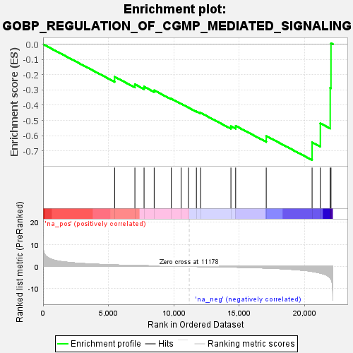
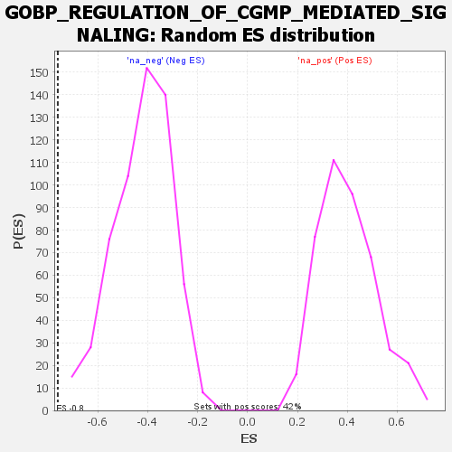

| | | Dataset | deseq_dnfgfr_res_for_gsea |
| Phenotype | NoPhenotypeAvailable |
| Upregulated in class | na_neg |
| GeneSet | GOBP_REGULATION_OF_CGMP_MEDIATED_SIGNALING |
| Enrichment Score (ES) | -0.76056063 |
| Normalized Enrichment Score (NES) | -1.8162616 |
| Nominal p-value | 0.0 |
| FDR q-value | 0.0859427 |
| FWER p-Value | 0.801 |
Table: GSEA Results Summary

Fig 1: Enrichment plot: GOBP_REGULATION_OF_CGMP_MEDIATED_SIGNALING
Profile of the Running ES Score & Positions of GeneSet Members on the Rank Ordered List
| SYMBOL | RANK IN GENE LIST | RANK METRIC SCORE | RUNNING ES | CORE ENRICHMENT | | 1 | Npr1 | 5473 | 0.654 | -0.2137 | No |
| 2 | Adora2b | 7024 | 0.404 | -0.2631 | No |
| 3 | Npr2 | 7725 | 0.310 | -0.2788 | No |
| 4 | Guca1a | 8498 | 0.216 | -0.3026 | No |
| 5 | Rundc3a | 9808 | 0.081 | -0.3576 | No |
| 6 | Nppa | 10560 | 0.010 | -0.3910 | No |
| 7 | Mtnr1b | 11117 | 0.004 | -0.4159 | No |
| 8 | Thbs1 | 11728 | -0.057 | -0.4405 | No |
| 9 | Pdzd3 | 12049 | -0.092 | -0.4503 | No |
| 10 | Nppb | 14368 | -0.326 | -0.5383 | No |
| 11 | Nppc | 14730 | -0.368 | -0.5358 | No |
| 12 | Pde11a | 17069 | -0.766 | -0.6023 | No |
| 13 | Ptk2b | 20576 | -2.277 | -0.6443 | Yes |
| 14 | Pde2a | 21205 | -3.008 | -0.5191 | Yes |
| 15 | Pde10a | 21960 | -5.230 | -0.2861 | Yes |
| 16 | Gucy2d | 22021 | -5.782 | 0.0065 | Yes |
Table: GSEA details [plain text format]

Fig 2: GOBP_REGULATION_OF_CGMP_MEDIATED_SIGNALING: Random ES distribution
Gene set null distribution of ES for GOBP_REGULATION_OF_CGMP_MEDIATED_SIGNALING